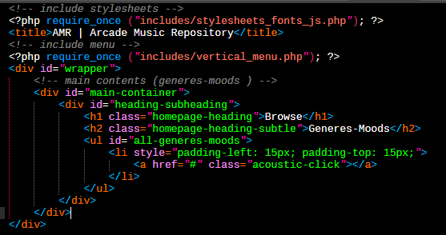

WEB DESIGN - PHP - MySQL
რა არის PHP?
PHP ეს არის მძლავრი საშუალება, რომლის მეშვეობითაც შეგვიძლია ავაგოთ
პრაქტიკულად ნებისმიერი სირთულის ვებ გვერდი.
PHP(Personal Home Page) (ჰიპერტექსტური პრეპროცესორი) წარმოადგენს სერვერული
სკრიფტინგის ენას, რაც ნიშნავს, რომ PHP-ზე დაწერილი კოდს ვერ აღიქვავს ბრაუზერი
თუ ვებ გვერდის შესაბამის ჰოსტინგს არ ექნება სერვერული მხარდაჭერა.

დღეს-დღეობით ფაქტიურად ჰოსტინგების უმეტესობას 90%-ს და მეტს აქვს სერვერული
მხარდაჭერა, რომელიც უზრუნველყოფს PHP კოდის წაკითხვას.
იმისათვის რომ გამოვიყენოთ PHP-ის სრული შესაძლებლობები აუცილებელია გვქონდეს
რომელიმე მონაცემთა ბაზა, ზოგადად PHP უზრუნველყოფს მრავალ მონაცემთა
ბაზასთან კავშირს. რომლებიდანაც დღეს-დღეობით ყველაზე გავრცელებულია MySQL
მონაცემთა ბაზა.
რა არის MySQL?
MySQL ეს არის მონაცემთა ბაზის სამართავი სისტემა.

MySQL მონაცემთა ბაზის უპირატესობა მოცემულ შემთხვევაში მგომარეობს იმაში, რომ
PHP კოდზე დაწერილი სკრიპტები ადვილად ახდენენ ბაზასთან წვდომას, ბაზიდან
მონაცემების წაკითხვას, შეცვლას, წაშლას და ა.შ. ასევე ჰოსტინგების უმეტესობას აქვს
MySQL ბაზის მხარდაჭერა და რაც ასევე მნიშვნელოვანია MySQL-ის მოხმარება არის
სრულიად უფასო.
გადასვლა უკან
copyright : 2020 File Created by: Tornike kikacheishvili